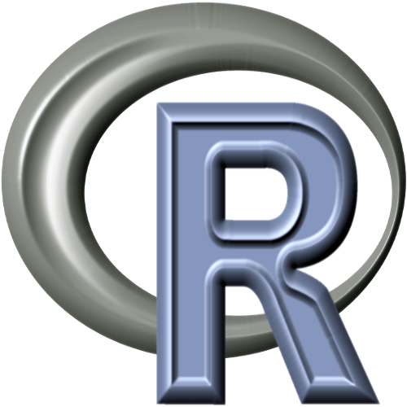

Linguagem JavaScript é uma linguagem de programação voltada para aplicações web,
de fácil execução e que pode ser rodada a partir de um navegador de internet.
Hoje, ela é uma das mais populares do mundo, o que a faz ser considerada fundamental
para programadores. Linguagem C # É uma linguagem de programação multiparadigma criada pela Microsoft, sendo a principal da plataforma .NET. Por ser uma linguagem que suporta, entre outros paradigmas, a orientação à objetos, ela suporta conceitos comuns como encapsulamento, herança e polimorfismo.Linguagem Python é uma linguagem de programação de alto nível, ou seja, com sintaxe mais simplificada e próxima da linguagem humana, utilizada nas mais diversas aplicações, como desktop, web, servidores e ciência de dados

Linguagem R é uma linguagem versátil, desenvolvida por dois pesquisadores do departamento de Estatística da Universidade Auckland, na Nova Zelândia. Ela surgiu a partir da necessidade de um programa que auxiliasse na manipulação, análise e visualização de dados.